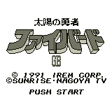

Fighbird - Gameboy Games

Controls
- A button: [not used]
- B button: Shoot
- Start: Pause
- Select: [not used]
You collect various power-ups along the way. There are also two different characters you can
choose. No other information available at this time.
Anime Video Game Resource Center © 1998 by Luis A. Cruz